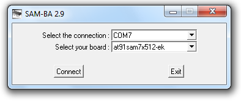
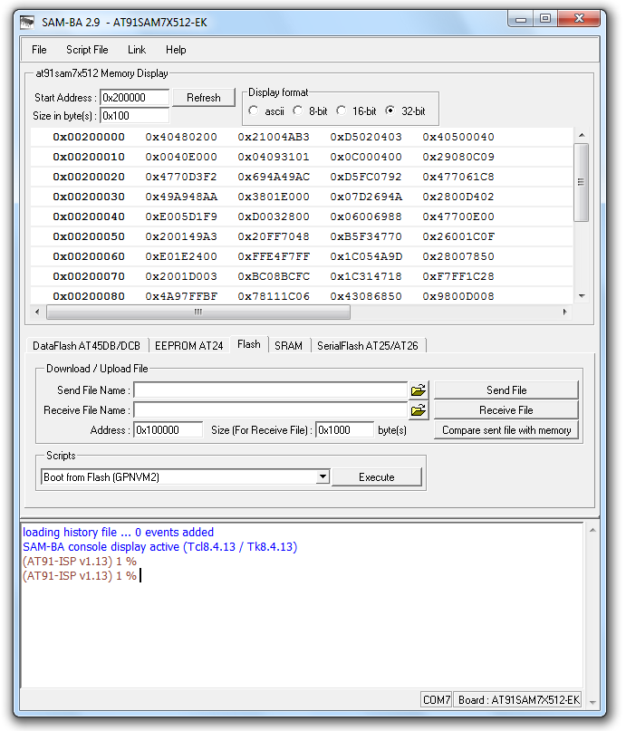
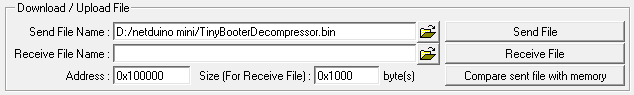
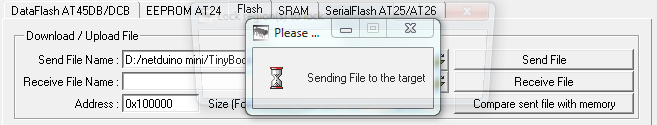
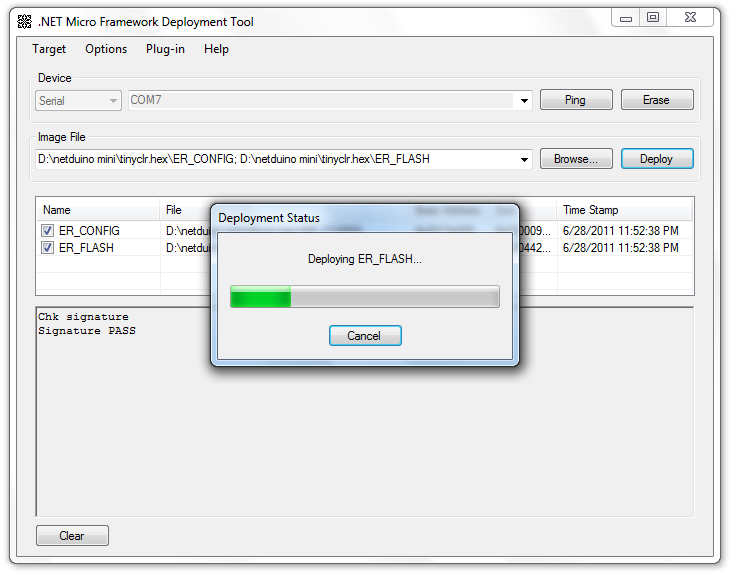

Updating the Netduino Firmware
Secret Labs releases Netduino firmware updates regularly as new versions of the .Net Micro Framework come out and in order to benefit from these updates, it’s necessary to update the Netduino’s Flash memory. There are in fact two sections of the Netduino’s Flash memory that may need to be updated, each with a different tool:
- The bootloader: a small program on the ARM processor’s chip designed to initialize the fundamental hardware subsystems and bootstrap an operating system or a runtime such as the .Net Micro Framework.
- The .Net Micro Framework: is composed of a set of binary files making up the Common Language Runtime, the engine capable of running compiled .Net applications written in languages such as C# or VB.Net. Every once in a while, SecretLabs makes changes to the Netduino port of the .Net Micro Framework which also requires flashing the bootloader first.
Flashing the Netduino mini bootloader
Atmel provides a tool called the ‘SAM Boot Assistant’ (SAM-BA) which is designed for tasks such as flashing bootloaders on their chips. For the Netduino mini, we’re going to need the version of SAM-BA designed to work over a RS232 serial interface which you can download and install from there Atmel site here. For reference, here’s the page on the Atmel site listing all the SAM-BA versions.
Erasing the Netduino mini
Before running SAM-BA to flash a bootloader, you need to erase the Netduino’s flash by connecting PIN 21 (5 volts) to the tiny gold pad near PIN 12 for a couple seconds.

Once that’s done, start SAM-BA v2.9. A small dialog box will prompt you for a connection and a board.
- For the connection, select the same COM port configured for the debugger / VC# deployments in Appendix D.
- For the board, select “at91sam7x512-ek”.
- Click ‘Connect”

If the following dialog box appears, it means that you chip wasn’t erased and you will need to redo the steps in the “Erasing the Netduino mini” section above:

If the chip was erased properly, the main SAM-BA window will appear:

In the “Scripts” drop-down, select “Boot from Flash (GPNVM2)” and click “Execute”. SAM-BA should respond with:
(AT91-ISP v1.13) 1 % FLASH::ScriptGPNMV 4 -I- GPNVM2 set
In the “Scripts” drop-down, select “Enable Flash access” and click “Execute”. SAM-BA should respond with:
(AT91-ISP v1.13) 1 % FLASH::Init -I- Loading applet isp-flash-at91sam7x512.bin at address 0x202000 -I- Memory Size : 0x80000 bytes -I- Buffer address : 0x202CD4 -I- Buffer size: 0x1D200 bytes -I- Applet initialization done
At this point, you will need to download the proper Netduino mini firmware from the Netduino.com community forums. Depending, on the version of the firmware that you want to install, you will need to choose either the official one or an Alpha/Beta version. At the time of this writing, we’re using v4.1.1 Beta 1 located here. Because we’re working with an RS232 connection for deployments, we need to download the firmware using RS232 as the default deployment interface. Once downloaded, open up the zip file and drag its content to a temporary folder of your choice. Let’s assume “D:\netduino mini” for example. The zip file contains the following files and folders:
- A folder named “tinyclr.hex”
- A file named “TinyBooterDecompressor.bin”
In the SAM-BA window, in the “Download / Upload file” section, open the file selection dialog, navigate to the location where “TinyBooterDecompressor.bin” is and select it:

Click “Send File”. A dialog with an hourglass will appear while the file is being uploaded to the netduino’s flash.

When the upload completes, SAM-BA will ask about locking the regions of flash memory which were just updated. Locking the flash pages which were just written is not required so just click “No”:

At the end of the procedure, the following should be visible in SAM-BA’s output window:
(AT91-ISP v1.13) 1 % send_file {Flash} "D:/netduino mini/TinyBooterDecompressor.bin" 0x100000 0
-I- Send File D:/netduino mini/TinyBooterDecompressor.bin at address 0x100000
first_sector 0 last_sector 2
-I- Writing: 0x8C34 bytes at 0x0 (buffer addr : 0x202CD4)
-I- 0x8C34 bytes written by applet
We’re done with SAM-BA, so close it.
Turn off the Pix-6T4 console, wait a couple seconds, then turn it back on.
Flashing SecretLabs’ .Net Micro Framework
The next step in the process is to flash the Netduino mini with a fresh copy of the .Net Micro Framework which is located under the folder named “tinyclr.hex” we downloaded earlier.
- Start MFDeploy.exe.
- In the “Device” section, select “Serial” and the COM port assigned to the debugger / VC# deployments.
- In the “Image File” section, click “Browse” and navigate to the folder where you downloaded the firmware earlier (“D:\netduino mini\tinyclr.hex” in this example).
- Select both of these files: "ER_CONFIG" and "ER_FLASH"
- Click “Deploy”
- MFDeploy will show a dialog with a progress bar while the firmware is being uploaded:

Once the upload completes, MFDeploy will show text similar to this in its output window:
Chk signature Signature PASS Chk signature Signature PASS .NetMF v4.1.2821.0 NetduinoMini, Build Date: Mar 26 2011 02:02:39 ARM Compiler version 400902 TinyCLR (Build 4.1.2821.0) Starting... Created EE. Started Hardware. Found debugger! Create TS. Loading start at 1380ac, end 14a4f0 Attaching file. Assembly: mscorlib (4.1.2821.0) (3880 RAM - 33236 ROM - 19134 METADATA) Attaching file. Assembly: Microsoft.SPOT.Native (4.1.2821.0) (1144 RAM - 6516 ROM - 4479 METADATA) Attaching file. Assembly: Microsoft.SPOT.Hardware (4.1.2821.0) (1760 RAM - 11552 ROM - 7395 METADATA) Attaching file. Assembly: Microsoft.SPOT.Hardware.SerialPort (4.1.2821.0) (512 RAM - 3488 ROM - 1543 METADATA) Attaching file. Assembly: Microsoft.SPOT.IO (4.1.2821.0) (740 RAM - 4620 ROM - 2522 METADATA) Attaching file. Assembly: System.IO (4.1.2821.0) (1548 RAM - 13292 ROM - 5862 METADATA) Attaching file. Assembly: SecretLabs.NETMF.Hardware (4.1.0.0) (256 RAM - 1108 ROM - 491 METADATA) Attaching file. Assembly: SecretLabs.NETMF.Diagnostics (4.1.0.0) (180 RAM - 440 ROM - 166 METADATA) Attaching file. Assembly: SecretLabs.NETMF.IO (4.1.0.0) (220 RAM - 564 ROM - 279 METADATA) Loading Deployment Assemblies. Resolving. Total: (8768 RAM - 74816 ROM - 41871 METADATA) Total: (8768 RAM - 74816 ROM - 41871 METADATA) Ready. Cannot find any entrypoint! Done. Waiting for debug commands...
In the “Plug-In” menu, select “Debug\Show Device Info” and verify that the firmware version is correct (in bold below):
DeviceInfo: HAL build info: 4.1.2821.0, Netduino Mini (v4.1.1.0 b1) by Secret Labs LLC OEM Product codes (vendor, model, SKU): 34, 177, 4098 Serial Numbers (module, system): 00000000000000000000000000000000 0000000000000000 Solution Build Info: 4.1.1.0, Netduino Mini (v4.1.1.0 b1) by Secret Labs LLC AppDomains: default, id=1 Assemblies: mscorlib,4.1.2821.0 Microsoft.SPOT.Native,4.1.2821.0 Microsoft.SPOT.Hardware,4.1.2821.0 Microsoft.SPOT.Hardware.SerialPort,4.1.2821.0 Microsoft.SPOT.IO,4.1.2821.0 System.IO,4.1.2821.0 SecretLabs.NETMF.Hardware,4.1.0.0 SecretLabs.NETMF.Diagnostics,4.1.0.0 SecretLabs.NETMF.IO,4.1.0.0
We are done with MFDeploy, so close it.
Flashing the Pix-6T4 Console Bootloader
This final step will restore the Pix-6T4 console to its original state by re-installing the bootloader application allowing the console to load and start games.
- Locate the ConsoleBootLoader project folder
- Open the ConsoleBootLoader.sln project.
- Once in VC#, ensure that the project properties are configured properly to deploy serially over the proper COM port.
- Right-click on the “ConsoleBootLoader” project in the “Solution Explorer” and select “Deploy”
- VC# will recompile the project and will deploy it to the Netduino mini.
- Turn off the console, then turn it back on with an SD card containing game cartridges in it.
- If all is well, it should boot to the game selection menu.